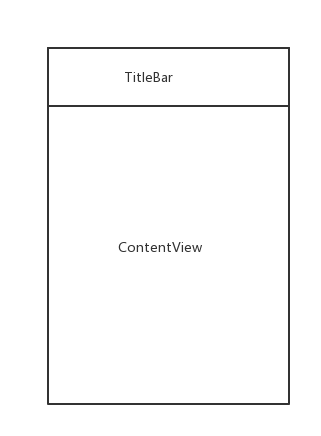
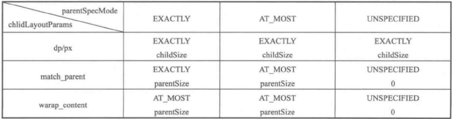
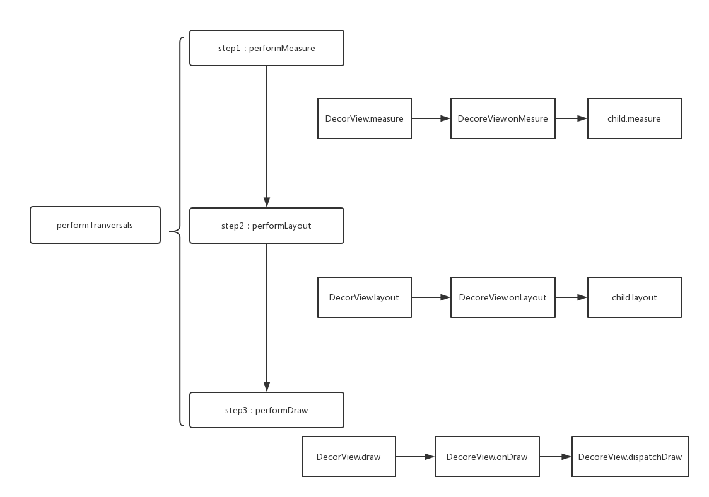

摘要
本文先描述Android的视图结构(ContentView和DecorView)；然后描述MeasureSpec和LayoutParams的对应关系；最后描述view的measure、layout、draw过程。
ContentView和DecorView
DecorView是PhoneWindow的内部类1
private final class DecorView extends FrameLayout implements RootViewSurfaceTaker
DecorView的结构
DecorView的具体样式结构和Android版本、厂家定制有关。大体是下面这样的：

我们在Activity中，通过setContentView()来设置ContentView。1
2
3
4
5
6
7
8
9
10
11
12
13/**
* Set the activity content from a layout resource. The resource will be
* inflated, adding all top-level views to the activity.
*
* @param layoutResID Resource ID to be inflated.
*
* @see #setContentView(android.view.View)
* @see #setContentView(android.view.View, android.view.ViewGroup.LayoutParams)
*/
public void setContentView(int layoutResID) {
getWindow().setContentView(layoutResID);
initWindowDecorActionBar();
}
MeasureSpec
从MeasureSpec的类注释看：
MeasureSpec由ViewGroup传给子View，里面包含了width和height的信息。MesureSpec由SpecSize和SpecMode组成。SpecMode包含三种：
- UNSPECIFIED
Parent不限制View的大小，想多大就多大 - EXACTLY
Parent规定了View的尺寸，不论View设置多大，只能是规定的尺寸大小。 - AT_MOST
View不能大于Parent指定的大小。
MeasureSpec和LayoutParams的对应关系
1 | public static int getChildMeasureSpec(int spec, int padding, int childDimension) { |
这段代码简单明了，可由下图表示，图片来自《Android开发艺术探索》插图

View的绘制流程
总览

大致源码
performTraversals
ViewRootImpl.java中的performTraversals方法。其代码非常长，其中依次调用了performMeasure、performLayout、performDraw。1
2
3
4
5
6
7
8
9
10
11
12
13
14
15
16
17
18
19
20
21
22
23
24
25
26
27
28
29
30private void performTraversals() {
...
if (!mStopped) {
int childWidthMeasureSpec = getRootMeasureSpec(mWidth, lp.width); // 1
int childHeightMeasureSpec = getRootMeasureSpec(mHeight, lp.height);
performMeasure(childWidthMeasureSpec, childHeightMeasureSpec);
}
}
if (didLayout) {
performLayout(lp, desiredWindowWidth, desiredWindowHeight);
...
}
if (!cancelDraw && !newSurface) {
if (!skipDraw || mReportNextDraw) {
if (mPendingTransitions != null && mPendingTransitions.size() > 0) {
for (int i = 0; i < mPendingTransitions.size(); ++i) {
mPendingTransitions.get(i).startChangingAnimations();
}
mPendingTransitions.clear();
}
performDraw();
}
}
...
}
measure过程
1 | private void performMeasure(int childWidthMeasureSpec, int childHeightMeasureSpec) { |
performMesure，里面逻辑很简单，此处mView就是DecorView，那么就从DecorView开始Measure。
DecorView继承自FramLayout，DecorView和FramLayout均没有measure方法，那么就是View的Measure1
2public final void measure(int widthMeasureSpec, int heightMeasureSpec) {
}
这个方法不看了，看注释吧，注释写得很到位：
它会调用onMeasure1
2
3* The actual measurement work of a view is performed in
* {@link #onMeasure(int, int)}, called by this method. Therefore, only
* {@link #onMeasure(int, int)} can and must be overridden by subclasses.
到FramLayout的onMeasure中1
2
3
4
5
6
7
8
9
10
11
12
13
14
15
16
17
18
19
20
21
22
23
24
25
26
27
28
29
30
31
32
33
34
35
36
37
38
39
40
41
42
43
44
45
46
47
48
49
50
51
52
53
54
55
56
57
58
59
60
61
62
63
64
65
66
67
68
69
70
71
72
73
74
75
76
77
78
79
80
81
82
83
84
85
86
87protected void onMeasure(int widthMeasureSpec, int heightMeasureSpec) {
int count = getChildCount();
final boolean measureMatchParentChildren =
MeasureSpec.getMode(widthMeasureSpec) != MeasureSpec.EXACTLY ||
MeasureSpec.getMode(heightMeasureSpec) != MeasureSpec.EXACTLY;
mMatchParentChildren.clear();
int maxHeight = 0;
int maxWidth = 0;
int childState = 0;
for (int i = 0; i < count; i++) {
final View child = getChildAt(i);
if (mMeasureAllChildren || child.getVisibility() != GONE) {
measureChildWithMargins(child, widthMeasureSpec, 0, heightMeasureSpec, 0);
final LayoutParams lp = (LayoutParams) child.getLayoutParams();
maxWidth = Math.max(maxWidth,
child.getMeasuredWidth() + lp.leftMargin + lp.rightMargin);
maxHeight = Math.max(maxHeight,
child.getMeasuredHeight() + lp.topMargin + lp.bottomMargin);
childState = combineMeasuredStates(childState, child.getMeasuredState());
if (measureMatchParentChildren) {
if (lp.width == LayoutParams.MATCH_PARENT ||
lp.height == LayoutParams.MATCH_PARENT) {
mMatchParentChildren.add(child);
}
}
}
}
// Account for padding too
maxWidth += getPaddingLeftWithForeground() + getPaddingRightWithForeground();
maxHeight += getPaddingTopWithForeground() + getPaddingBottomWithForeground();
// Check against our minimum height and width
maxHeight = Math.max(maxHeight, getSuggestedMinimumHeight());
maxWidth = Math.max(maxWidth, getSuggestedMinimumWidth());
// Check against our foreground's minimum height and width
final Drawable drawable = getForeground();
if (drawable != null) {
maxHeight = Math.max(maxHeight, drawable.getMinimumHeight());
maxWidth = Math.max(maxWidth, drawable.getMinimumWidth());
}
setMeasuredDimension(resolveSizeAndState(maxWidth, widthMeasureSpec, childState),
resolveSizeAndState(maxHeight, heightMeasureSpec,
childState << MEASURED_HEIGHT_STATE_SHIFT));
count = mMatchParentChildren.size();
if (count > 1) {
for (int i = 0; i < count; i++) {
final View child = mMatchParentChildren.get(i);
final MarginLayoutParams lp = (MarginLayoutParams) child.getLayoutParams();
int childWidthMeasureSpec;
int childHeightMeasureSpec;
if (lp.width == LayoutParams.MATCH_PARENT) {
childWidthMeasureSpec = MeasureSpec.makeMeasureSpec(getMeasuredWidth() -
getPaddingLeftWithForeground() - getPaddingRightWithForeground() -
lp.leftMargin - lp.rightMargin,
MeasureSpec.EXACTLY);
} else {
childWidthMeasureSpec = getChildMeasureSpec(widthMeasureSpec,
getPaddingLeftWithForeground() + getPaddingRightWithForeground() +
lp.leftMargin + lp.rightMargin,
lp.width);
}
if (lp.height == LayoutParams.MATCH_PARENT) {
childHeightMeasureSpec = MeasureSpec.makeMeasureSpec(getMeasuredHeight() -
getPaddingTopWithForeground() - getPaddingBottomWithForeground() -
lp.topMargin - lp.bottomMargin,
MeasureSpec.EXACTLY);
} else {
childHeightMeasureSpec = getChildMeasureSpec(heightMeasureSpec,
getPaddingTopWithForeground() + getPaddingBottomWithForeground() +
lp.topMargin + lp.bottomMargin,
lp.height);
}
child.measure(childWidthMeasureSpec, childHeightMeasureSpec);
}
}
}
它会遍历Child，调用measureChildWithMargins，measureChildWithMargins会调用child.measure。1
2
3
4
5
6
7
8
9
10
11
12
13
14protected void measureChildWithMargins(View child,
int parentWidthMeasureSpec, int widthUsed,
int parentHeightMeasureSpec, int heightUsed) {
final MarginLayoutParams lp = (MarginLayoutParams) child.getLayoutParams();
final int childWidthMeasureSpec = getChildMeasureSpec(parentWidthMeasureSpec,
mPaddingLeft + mPaddingRight + lp.leftMargin + lp.rightMargin
+ widthUsed, lp.width);
final int childHeightMeasureSpec = getChildMeasureSpec(parentHeightMeasureSpec,
mPaddingTop + mPaddingBottom + lp.topMargin + lp.bottomMargin
+ heightUsed, lp.height);
child.measure(childWidthMeasureSpec, childHeightMeasureSpec);
}
至此， DecorView.performMeasure->measure->onMeasure->child.measure的主流程从代码层面得到了验证。
layout过程
ViewRootImpl.performLayout1
2
3
4
5private void performLayout(WindowManager.LayoutParams lp, int desiredWindowWidth,int desiredWindowHeight) {
……
host.layout(0, 0, host.getMeasuredWidth(), host.getMeasuredHeight());
……
}
到Decor的Layout方法中,View.layout1
2
3
4
5
6
7
8
9
10public void layout(int l, int t, int r, int b) {
……
if (changed || (mPrivateFlags & PFLAG_LAYOUT_REQUIRED) == PFLAG_LAYOUT_REQUIRED) {
onLayout(changed, l, t, r, b);
mPrivateFlags &= ~PFLAG_LAYOUT_REQUIRED;
ListenerInfo li = mListenerInfo;
}
……
}
FramLayout.onLayout1
2
3
4
5
6
7
8
9
10
11
12
13
14
15
16
17
18
19
20
21
22
23
24protected void onLayout(boolean changed, int left, int top, int right, int bottom) {
layoutChildren(left, top, right, bottom, false /* no force left gravity */);
}
void layoutChildren(int left, int top, int right, int bottom,
boolean forceLeftGravity) {
final int count = getChildCount();
final int parentLeft = getPaddingLeftWithForeground();
final int parentRight = right - left - getPaddingRightWithForeground();
final int parentTop = getPaddingTopWithForeground();
final int parentBottom = bottom - top - getPaddingBottomWithForeground();
mForegroundBoundsChanged = true;
for (int i = 0; i < count; i++) {
final View child = getChildAt(i);
if (child.getVisibility() != GONE) {
……
child.layout(childLeft, childTop, childLeft + width, childTop + height);
}
}
}
对可见属性不是GONE的child进行layout。
至此，DecorView.performLayout->layout->onLayout->child.layout过程也从代码层面得到了验证。
draw过程
1 | private void performDraw() { |
DecorView.draw:1
2
3
4
5
6public void draw(Canvas canvas) {
super.draw(canvas);
if (mMenuBackground != null) {
mMenuBackground.draw(canvas);
}
}
FramLayout的draw中会调View的Draw。
View的Draw也贼长，但是借助注释可以很快知道其过程：1
2
3
4
5
6
7// Step 3, draw the content
if (!dirtyOpaque) onDraw(canvas);
// Step 4, draw the children
dispatchDraw(canvas);
// Step 5, draw the fade effect and restore layers
它会调到onDraw中，然后dispatchDraw来完成children的draw。
和之前的measure/Layout过程不同的是，draw并不在onDraw中进行子View的Draw，而是通过dispatchDraw。onDraw只负责其本身的绘制。
至此，draw过程也从代码层面上得到了验证。